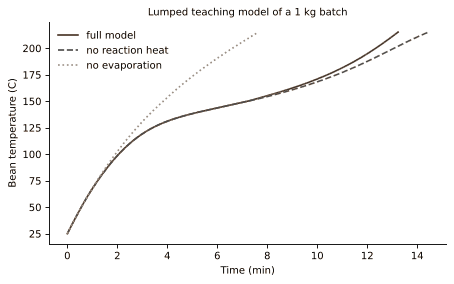

How does heat get into a bean, where does it go, and what can a roast log tell you?
After this chapter you can
Prerequisites: Chapter 6, Section 4 (heat budget); Appendix C, Sections C.3 and C.6 (Arrhenius, heat transfer).
A roaster logs two batches of the same green coffee. Both reach the same end temperature and the same colour, but one took nine minutes and the other fourteen, and they taste different. A third batch reached first crack sooner than expected and scorched. The roaster's software shows each batch as a curve of temperature against time. What does the shape of that curve say about what happened inside the beans?
This chapter treats a roast as a problem in heat and mass transfer: heat flows into the beans from the machine, and water and gas flow out. Sections 1 to 3 set out the routes by which heat arrives and build an energy balance that reproduces the shape of a roast curve. Sections 4 to 7 look inside the bean at temperature gradients, water, reaction heat and structure. Sections 8 to 12 turn to measurement, development time, defects and profile design.
Roasting produces smoke, carbon monoxide and chaff that can catch fire. Roast outdoors or under extraction, never leave a running roaster, keep a lid or extinguisher at hand, and remember that roaster bodies and freshly dropped beans stay hot enough to burn skin for several minutes. Carbon monoxide has no smell; commercial roasteries use detectors. A modified popcorn popper runs its motor and heater beyond their design limits, so watch it throughout.
Heat reaches a bean by three routes (Appendix C.6). Conduction carries heat through solid contact, from hot metal or neighbouring beans. Convection carries heat from a moving fluid, here hot gas, to a surface. Radiation carries heat as infrared light from any hot surface to cooler ones. Their shares depend on the machine.
A drum roaster tumbles beans inside a heated rotating cylinder while hot gas is drawn through it. All three routes contribute, and the beans spend much of their time in a moving pile, exchanging heat with each other. A fluid-bed roaster suspends beans in a fast jet of hot air and heats them almost entirely by convection.
Each route has its own law. Convection delivers a heat flux q = h(Tgas − Ts), where h is the heat-transfer coefficient and Ts the surface temperature. Radiation from a wall at temperature Tw to a bean surface delivers
| q = ε σ (Tw4 − Ts4) | (7.1) |
| where | q | heat flux (W/m2) |
| ε | emissivity of the surface, 0 to 1 | |
| σ | Stefan-Boltzmann constant, 5.67 × 10−8 (W/(m2 K4)) | |
| Tw, Ts | wall and bean-surface temperatures (K) |
Emissivity measures how effectively a surface emits and absorbs radiation compared with a perfect absorber.
Worked example: Radiation against convection in a drum
Problem. A drum wall at 300 °C radiates to beans at 150 °C with emissivity 0.9. Hot air with h = 17 W/(m2 K) flows past the same beans 100 K hotter than them. Compare the two heat fluxes.
Plan. Convert to kelvin for Equation 7.1; the convective flux is hΔT.
Solution. Radiation: 0.9 × 5.67 × 10−8 × (5734 − 4234) = 3.9 kW/m2. Convection: 17 × 100 = 1.7 kW/m2.
Check. The fourth power makes radiation grow rapidly with wall temperature. A 2025 study fitted overall coefficients of 60 to 103 W/(m2 K) at air temperatures of 200 to 280 °C [1]. The convective part alone was only 16 to 17, so radiation dominated in that roaster at low air speed.
To predict how bean temperature changes, we write an energy balance: the rate at which a system's stored heat rises equals the rate at which heat enters minus the rate at which it leaves, plus any heat generated inside. Following the approach of Chapter 2A, we treat the whole batch as one lump at a single temperature T. Heat enters through an effective transfer term, is spent warming dry matter and water and evaporating water, and is added by reactions that release heat:
| C dT/dt = hA (Tair − T) − Lv (−dmw/dt) + Qrxn | (7.2) |
| where | C | heat capacity of the batch, mdrycp,dry + mwcp,water (J/K) |
| hA | effective heat-transfer coefficient times area for the whole batch (W/K) | |
| Tair | effective temperature of the heat source (°C) | |
| Lv | latent heat of vaporisation, 2,257 (kJ/kg) | |
| mw | mass of water in the beans (kg) | |
| Qrxn | rate of heat release by reactions (W) |
The left side is the rate at which the batch stores heat. The first term on the right is heat in; the second is heat used to evaporate water (dmw/dt is negative while water leaves, so −dmw/dt is positive); the third is reaction heat. Chapter 6 supplied cp,dry ≈ 1.4 kJ/(kg K) and Lv. The total heat released by roasting reactions has been estimated at about 232 kJ per kg of dry matter, starting near 150 °C [1]. A reaction that releases heat is exothermic; one that absorbs heat is endothermic.
Worked example: The first minute
Problem. A 1 kg batch at 11% moisture is charged at 25 °C into a roaster with an effective hA of 6 W/K per kg and Tair = 250 °C. What is the initial heating rate?
Plan. At charge no water is evaporating yet and no reaction heat is released, so only the first term of Equation 7.2 acts.
Solution. The batch heat capacity is C = 0.89 × 1.4 + 0.11 × 4.18 = 1.71 kJ/K. Heat flow: 6 × (250 − 25) = 1,350 W. Heating rate: 1,350/1,710 = 0.79 K/s, or 47 °C/min.
Check. As T rises the driving difference Tair − T shrinks, so the rate must fall; the simulator below shows it doing so.
Solving Equation 7.2 by hand is impractical, because the evaporation and reaction terms themselves depend on temperature. The calculator below solves it step by step: it computes every term at the current temperature, advances time by a small step, updates the temperature and water content, and repeats.
Figure 7.1 shows the model with and without its evaporation and reaction terms. Early on, the large temperature difference drives a fast rise. Between about 100 and 160 °C, evaporation absorbs much of the incoming heat and the rise slows to a plateau. Above 150 °C the reactions add heat. Bustos-Vanegas and colleagues found that leaving evaporation out of their bean model gave larger errors than leaving out the reaction heat [1], which the figure reproduces.

Figure 7.1. The teaching model with and without its evaporation and reaction terms (1 kg, 11% moisture, Tair 250 °C). Compare the middle of the roast, where evaporation matters most, with the end, where reaction heat shortens the roast.
The teaching model also shows its limits. With a constant air temperature, its heating rate climbs at the end as reaction heat accelerates, and nearly all the water leaves. Real roasters reduce heat late in the roast, and real beans finish with 1.5 to 4% moisture, because removing the last water is limited by vapour diffusing out of the bean rather than by heat supply [1]. The model's effective hA of 6 W/K per kg corresponds, at about 1.1 m2 of bean surface per kg, to only about 5.5 W/(m2 K), far below single-bean values. In a drum, most bean surface is hidden inside the pile at any moment, and the roaster's heat supply is shared by the whole batch.
The energy balance treats each bean as having one temperature. Whether that is reasonable depends on a comparison: how fast heat arrives at the surface against how fast it travels inward. The Biot number expresses the comparison:
| Bi = h Lc / λ | (7.3) |
| where | Bi | Biot number (dimensionless) |
| h | heat-transfer coefficient at the surface (W/(m2 K)) | |
| Lc | characteristic length, volume divided by surface area (m) | |
| λ | thermal conductivity of the bean (W/(m K)) |
Below about 0.1, the inside keeps pace with the surface and one temperature is enough. Chapter 6 estimated Bi for a green bean at 0.2 to 0.8 depending on h; the 2025 study reported 0.48 to 0.82 [1]. The surface therefore heats ahead of the centre. A computational study cited there found about 16 °C between bean centre and surface during roasting [1].
How long does the centre take to catch up? Heat spreads through a solid by a diffusion process like the one in Chapter 2A, with the thermal diffusivity α = λ/(ρcp) in place of D. The time scale is about r2/α, which for a bean of radius 3 mm is roughly two minutes (Appendix C.6). In a fast roast, the surface can reach temperatures where browning proceeds quickly while the centre is still drying, which is the physical basis of several defects (Section 11).
At first, water moves to the bean surface and evaporates. As the outer layers dry, the remaining water must leave as vapour through the bean, so the drying rate falls even though heat keeps arriving. Most of the green bean's 10 to 12% moisture leaves in the first two thirds of a roast. The drying phase consumes about half the heat a roast requires (Chapter 6, Section 4) and builds the steam pressure that later drives expansion.
Once the bean is hot enough, the reactions of Chapter 8 (browning, sugar breakdown and breakdown of chlorogenic acids) release heat overall. In the model this appears as a rate that rises exponentially with temperature, following the Arrhenius equation (Appendix C.3). Roasters see it as a change in the slope of the temperature curve near and after first crack. Controlling it is one reason heat input is reduced late in a roast. The figure of 232 kJ/kg comes from one kinetic model; published values vary, and some studies find that parts of the roast absorb heat overall.
Roasting turns a dense, moist, tough bean into a porous, dry, brittle one. Schenker's study at ETH Zurich compared two kinds of hot-air roast matched on colour and mass loss [2]. One used a high temperature for a short time (260 °C, 155 to 180 s); the other a low temperature for a long time (220 °C, 540 to 720 s). That work and the literature it reviews report four findings.
Expansion therefore depends on the path as well as the end point: a fast roast expands and opens the bean more. That changes degassing (Chapter 5), grinding (Chapter 4) and extraction (Chapter 2A), even at equal colour.
First crack is an audible popping as internal pressure fractures the bean structure, often starting near 195 to 205 °C on typical probes. Second crack, in darker roasts, comes from further breakdown of the weakened cell walls. Wilson recorded both acoustically and found first-crack events about 15% louder in peak pressure than second-crack events, at a frequency nearly 19 times lower, with second-crack events about five times more frequent [3]. The difference is large enough for automatic detection.
A bean-temperature probe sits in the tumbling mass of beans and reads somewhere between bean surfaces, the air between them and its own lagging metal. It reads neither the bean's centre nor its surface. Probes of different thickness on one roaster give different curves, and position matters. Treat logged bean temperature as a reproducible index for one machine and one probe.
A roast log uses standard landmarks. Charge is the moment green coffee enters. The probe reading falls as cold beans surround it, reaches a turning point, then rises. Rate of rise (RoR) is the slope of the bean-temperature curve, the heating rate γ in °C per minute. Drop is the end of the roast. Development time is the time from first crack to drop, and the development time ratio is that time as a fraction of the whole roast:
| DTR = (tdrop − tFC) / tdrop | (7.4) |
| where | DTR | development time ratio (fraction) |
| tdrop | time from charge to drop (s) | |
| tFC | time from charge to first crack (s) |
Rate of rise is a derivative, and differentiating noisy data amplifies the noise. The usual remedy is to fit a straight line by least squares through a window of recent readings and report its slope.
Worked example: Noise against smoothing
Problem. A probe logs once per second with random noise of standard deviation 0.2 °C. Compare the noise in a rate of rise computed from consecutive readings with one computed by least squares over a 31-second window.
Plan. For consecutive readings, the difference of two noisy values has standard deviation 0.2√2. For a least-squares slope through n evenly spaced points, the standard deviation is σ/√[n(n2 − 1)/12] (Appendix E.5).
Solution. Consecutive readings: 0.2 × √2 = 0.28 °C/s, or 17 °C/min, larger than the signal itself. With n = 31: 0.2/√(31 × 960/12) = 0.004 °C/s, or 0.24 °C/min.
Check. The cost is delay: a 31-second window reports the average slope centred 15 s in the past, and smooths away changes shorter than the window, such as the brief jump at first crack.
Roast colour is measured by reflectance on whole beans or ground coffee (Chapter 0, Section 7). Low-cost optical sensors have been validated against reference methods for consistency within a roastery [4]. Ground colour reflects the whole bean; whole-bean colour mostly reflects the surface. The difference between them is itself a measure of how far the centre lags the surface.
Proton-transfer-reaction mass spectrometry (PTR-MS) identifies volatile compounds in a gas stream by giving each molecule a proton and weighing the resulting ion (Appendix D.7). Wieland and colleagues sampled roaster exhaust once per second across 42 drum roasts [5]. The signals changed sharply at the switch from heat-absorbing drying to heat-releasing reactions (about 625 s in one dark roast) and again at first crack (about 730 s). Hot-air temperature mainly set the speed of the process. A statistical model built from 23 ion signals separated roast degrees and predicted the final roast degree to within about one colour unit after first crack.
Development time is widely used to describe and control roasts, but its effect is easily confused with others. Lengthening development at a fixed end temperature also changes the whole time-temperature history, and usually the colour.
Alstrup and colleagues (2020) roasted one coffee with four profiles that differed subtly in development time and analysed the brews by descriptive sensory analysis and two chemical methods [6]. Longer development shifted the chemical and sensory profiles significantly: shorter development was associated with fruity, sweet and acidic attributes, longer with roasty, nutty and bitter ones. Related work by the same group examined how development time and roast colour relate [7]. Development time is therefore a demonstrated control variable. What remains open is how much of its effect is separate from colour and from the total heat the bean receives.
Common misconception
"A development time ratio of 20 to 25% is what makes a roast well developed." No controlled study has established a universal target ratio. The ratio depends on how long the roast took to reach first crack, so the same development time gives different ratios in fast and slow roasts. The evidence supports development time as a variable that changes flavour, to be tuned for each coffee, not a fixed target.
Worked example: Separating development time from colour
Problem. Design an experiment to test whether development time changes sourness at fixed roast colour.
Plan. Development time and colour are linked, so they must be crossed deliberately in a factorial design (Chapter 9).
Solution. Cross end colour at two levels (for example ground reflectance 65 and 55 on one instrument) with development time at two levels (75 and 150 s), giving four profiles. Reaching the same colour with different development times requires changing the heat earlier in the roast: more heat before first crack and a gentler finish for the long-development profile. Roast each profile three times on separate days in random order, verify colour on ground coffee, and analyse sourness scores and titratable acidity with a two-way ANOVA (Appendix E.4).
Check. A significant development-time effect at fixed colour shows an effect beyond colour. A significant interaction shows that the effect depends on roast degree. Chapter 9 works through this design with data.
Each common defect points to a term in the energy balance.
Scorching, tipping and facing come from excessive heat flux at the surface. Baking comes from too little heat at the wrong time. Underdevelopment comes from too little time for the centre to follow the surface.
A roast profile is a plan for heat input over time. The energy balance identifies the controls. Charge temperature and early heat set the drying phase. Heat in the middle of the roast sets the pace of browning. Reducing heat before and through first crack controls the reaction heat and development. Drop temperature, or colour, sets the end point. Because different profiles can reach the same colour, specify a profile by its measured outcomes (colour, mass loss, development time) and evaluate it by tasting and, where possible, by titratable acidity and extraction yield at a fixed recipe.
This chapter treated the reactions inside the bean as a source of heat. Chapter 8 opens them up: which reactions run, what they make and destroy, and how the temperature path decides the balance between acids, bitter compounds and aroma.
| Quantity | Equation | Notes |
|---|---|---|
| Radiative heat flux | q = εσ(Tw4 − Ts4) | Equation 7.1. Kelvin. |
| Batch energy balance | C dT/dt = hA(Tair − T) − Lv(−dmw/dt) + Qrxn | Equation 7.2. |
| Biot number | Bi = h Lc / λ | Equation 7.3. One temperature is adequate if Bi < 0.1. |
| Development time ratio | DTR = (tdrop − tFC) / tdrop | Equation 7.4. |
Biot number; Charge; Conduction; Convection; Development time; development time ratio; Drop; drum roaster; Emissivity; endothermic; energy balance; exothermic; First crack; fluid-bed roaster; glass transition; Proton-transfer-reaction mass spectrometry; Radiation; Rate of rise; roast profile; Second crack; thermal diffusivity; turning point.
Aim. Roast one coffee by two profiles to the same colour and mass loss, and test whether they differ in the cup.
Safety
Materials
Method
Data sheet
| Roast | Profile | Total time | Dev. time | Mass loss (%) | Ground colour | Notes |
|---|---|---|---|---|---|---|
Analysis
Aim. Compute rate of rise from your own logged data and choose a window.
Materials
Method
Data sheet
| Window (s) | Noise before first crack (SD) | RoR at first crack | First crack visible? |
|---|---|---|---|
Analysis
Aim. Record first and second crack and compare their event rates and frequencies.
Materials
Method
Data sheet
| Interval | First-crack events | Second-crack events | Dominant frequency |
|---|---|---|---|
Analysis
Aim. Measure the change in volume and density on roasting for two profiles.
Materials
Method
Data sheet
| Sample | Bulk density (g/L) | Mass loss (%) | Relative volume |
|---|---|---|---|
Analysis
Tiers: A recall, B calculation, C analysis or design.
Worked solutions to all problems: 7. Roasting I: heat and mass transfer solutions.
Upstream, Second edition, version 2.2 (changes and errata). © 2026 [Author name]. Licensed for personal use; see licence.